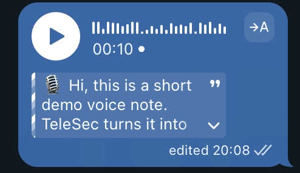

Hermes plugin
Telesec
Telegram Business secretary:
voice notes become text in the chat.
- Per-chat controls in Manage Bot
- Opt-in history, stats, and dossiers
- Uses your Hermes STT and model
Telegram Business secretary:
voice notes become text in the chat.
